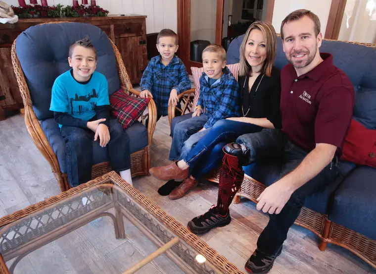

Dave Wallis / The Forum
LEONARD, N.D. — “Honey, how many eggs do you need?”
Jon Leedahl was on his way home on his motorcycle, having just completed a successful day at work as a mission pilot in the jungle of Papua New Guinea.
He knew the egg farmer was in town and that his wife, Adie, would be needing more eggs for the baking she’d been doing for him and their three young boys.
But what began as a rather routine question from an attentive husband soon turned grave.
A short time later, Adie says, another call from Jon came in. “I assumed he just wanted to make sure about the eggs.”
That second phone call from Oct. 15, 2014, isn’t recorded in Jon’s memory, nor was anything else over the next eight hours. His brain had begun dumping superfluous data to focus on staying alive, he explains.
In the brief span of time between calls, Jon had turned onto a blind curve and been hit head-on by a drunk driver traveling on the wrong side of the road.
The accident, re-created through others’ accounts and known facts, left Jon with a severed artery and nearly bleeding to death, with one mangled leg and the other also maimed.
The couple and their three sons were only seven months into their time in Papua New Guinea when the accident happened.
Ultimately, Jon lost his right leg but not his will to complete the work he’d set out to do.
On Feb. 7, just a year and fourth months after the accident, the family will leave Fargo’s Hector International Airport bound once more for the place and people they have come to love.
As Adie says, “We see this trauma and recovery as something God gave us to share with others to show (God’s) strength, his miracles and for him to get the glory.”
Jon will return not as a limited amputee, but a full-fledged pilot, with hopes set on ultimately taking over as the country’s chief pilot of its check and training program.
Their story hints at many impossibilities, yet the Leedahls embrace a story of possibility through God’s grace.
“The Lord allowed the accident,” Jon says, “but he proceeded to perform multiple miracles, any one of which hadn’t happened, I wouldn’t be here, and even then, I shouldn’t be here.”
Open doors
A foreshadowing to the story happened when Jon was only 11 and was thrown from a three-wheeler after disobeying his parents and driving it in fourth gear. He ended up with a compound fracture of his femur, and spent the lonely summer recuperating.
Jon later wrote in a blog post that from then on, he decided to act only with God’s intentions in mind.
His father, Arlo, had given him the advice that to discern God’s will, ask for guidance, and the opened or closed doors would make it clear.
As an older teen, Jon discovered a love for flying, and one by one, doors opened to lead him toward becoming a pilot. His career included flying glacier tours in Alaska, medical flights in Texas and life-flight helicopter and crop-dusting in Minnesota.
It also involved a stop at the altar to marry Adie, a young woman he’d first encountered at 13 after meeting her brother at a Promise Keepers event in Boulder, Colo.
That match, too, seemed impossible, since she lived in Hawaii at the time and he in North Dakota. But the families kept in touch, and years later, their love became evident.
“My parents had seen the potential between the two of us,” Adie says, “but at 16, the words came out, ‘No, I am never marrying Jon Leedahl!’ Famous last words.”
Eventually, the time was right for Jon to pursue his longtime dream of doing support work as a pilot for New Tribes Mission.
The couple and their three sons were only seven months into their time in Papua New Guinea when the accident happened.
A local pastor who’d driven by helped transport Jon to a small nearby clinic, led by a pediatrician ill-equipped for what faced her.
An on-duty nurse familiar with blood transfusions leaped into action. Though the clinic didn’t normally collect blood, a villager with a condition producing excess hemoglobin recently had provided the clinic with three rare bags full of blood.
Though expired, the blood and a tourniquet kept Jon stable until he could get to a larger hospital.
A mother’s love
Back on the family farm in Leonard, Cam Leedahl received a call around 2 a.m. It was Adie with news that Jon was in grave condition and might not make it through the night. Adie handed the doctor the phone to deliver the news too hard for her to say.
Cam, a critical-care nurse, immediately went into emergency mode, calling on God for strength to impart words of encouragement to a physician tending to her son halfway around the world.
“I told her I was praying for her, that God would bless her hand with what needs to be done,” Cam says. She then dropped to her knees in prayer, and began calling on others to join her. “I can still see the spot in the living room where I was praying, asking God to spare my son.”
The next day, Jon was airlifted to Cairns, Australia. Cam soon joined them. “I thought I’d be going there to bring a body home,” she admits. Instead, she ended up helping Adie provide a sense of normalcy for the boys during the next five fragile months.
An optimistic doctor in Cairns tried saving Jon’s mutilated leg and repaired the other, but eventually, amputation proved inevitable.
Though in a groggy, medicated state, Jon was alert and determined enough to sign the consent form himself, wanting to spare Adie the burden, he says.
“The hospital there had never seen so much support for a patient,” Jon adds, noting that the mailroom was deluged with packages and letters of support from the mission community and others who’d joined the family in prayer.
Over time, it became clear that Jon’s residual limb, or “stump,” would require another surgery if he were ever to fly again.
In March, the family arrived in Rochester, Minn., and at Mayo Clinic, a team performed a second amputation on Jon’s right leg, preparing it for a prosthesis, which was applied in May.
The family since has been recovering at the Leonard farm, where the ever-determined Jon has been doing strengthening exercises, retraining his muscle memory in his leg to work the pedals of a plane, and, with his father’s help, slowly learning to fly again.
Beating the odds, Jon has now passed all tests required to return to mission work as a pilot.
While some might question the family’s ambitions, they remain undaunted.
The natives “live in fear and darkness,” Jon says, noting that “witchcraft and sorcery” are not uncommon in the jungle.
One tribe, after hearing the Gospel message, he says, remarked, “We see the light in your eyes. When we see our eyes, we see darkness. We want to know how we can have this light, too.” Jon adds, “When they’re liberated from the darkness, it’s incredible.”
Cam says seeing God’s multiple provisions for her son and his family has increased her faith.
“I’ve had an unfaltering faith all along, but if there was any thinness anywhere, it’s just gotten deeper and thicker. I have even more joy, more peace,” she says. “I’m standing on solid rock. This has given me a chance to know just how solid that rock is.”
Online
[For the sake of having a repository for my newspaper columns and articles, I reprint them here, with permission, a week after their run date. The preceding ran in The Forum newspaper on Jan. 23, 2016.]